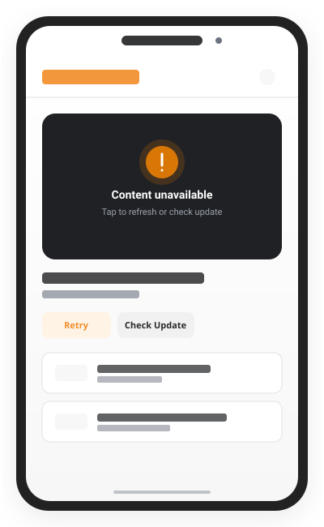

NewPipe
The lightweight YouTube experience for Android
NewPipe does not use any Google framework libraries or the YouTube API. Only websites are parsed to retrieve necessary media information, granting you full streaming freedom without proprietary tracking.

Main Features
NewPipe – the smart streaming solution
Engineered to restore control over your multimedia experience on Android devices without ads, trackers, or forced accounts.
Offline usage
Download video and audio streams directly to your device storage. Choose video resolution, audio format, and subtitle tracks to enjoy playback anywhere without an active network connection.
Extended Privacy
Your privacy is respected by design. NewPipe contains zero tracking beacons, telemetry trackers, or proprietary Google APIs. All your viewing habits and subscriptions remain exclusively on your phone.
Background Player
Listen to music, interviews, or lectures in the background while browsing other applications or keeping your device screen completely powered off to conserve battery life.
Popup Player
Multitask effortlessly with floating picture-in-picture windows. Resize the movable video overlay, adjust aspect ratios, or pin it anywhere across your screen while using other tools.
Subscriptions
Follow your favorite channels and creators without creating a Google or YouTube account. Import and export subscriptions securely with zero cloud synchronization requirements.
Bookmarks and Local Playlists
Organize custom collections of media tracks and save favorite streams to locally managed playlists that are stored securely on your device with complete offline accessibility.
History
Easily revisit past videos with an optional on-device viewing history log. Search your personal history, manage retention preferences, or clear data whenever you desire.
High Definition Playback
Stream videos in 720p, 1080p, 2K, or 4K with 60 FPS support. Switch between software and hardware decoders for the smoothest visual playback on your Android chipset.
Free & Open Source
Released under the GNU General Public License v3.0 (GPLv3). Transparent source code maintained by a worldwide community of privacy-conscious developers.
Supported Services
NewPipe is not just for YouTube. Stream audio and video from multiple independent platforms through a single privacy-focused interface.
YouTube
Watch videos, trending content, channel feeds, and comments without advertisements or algorithmic tracking.
PeerTube
Explore federated, decentralized video sharing powered by ActivityPub across hundreds of community instances.
SoundCloud
Stream music tracks, artist playlists, and electronic podcasts without proprietary account restrictions.
Bandcamp
Discover independent artists, discographies, and audio releases straight from the creator-centric music platform.
media.ccc.de
Access high-quality lecture recordings, technical conferences, and talks from the Chaos Computer Club network.
Anti-Features & Freedom
F-Droid flags specific software traits that users should know. Here is how NewPipe handles upstream services transparently.
Non-Free Network Services
NewPipe communicates with upstream commercial video platforms (such as YouTube) that operate non-free backend services. However, NewPipe itself contains zero proprietary tracking code and accesses streams solely via public web parsers.
Zero Proprietary Bloatware
Unlike standard video apps, NewPipe does not include Google Play Services binaries, Firebase analytics, advertising SDKs, or invasive crash reporters. Your device remains lean and unmonitored.
No Account Enforcement
You can search, stream, download, and subscribe to content completely anonymously. No login credentials or personal identification are ever requested or stored.
Get NewPipe
Choose your preferred installation method to enjoy privacy-friendly multimedia streaming on your Android device.
APK Info
Direct standalone Android package with integrated self-updater notifications.
Download Direct APKF-Droid Repository
Install and manage NewPipe through the premier free and open-source Android app repository.
View on F-DroidGitHub Releases
Access official release assets, pre-release test builds, and inspect open-source commit history.
GitHub RepositoryRelease Highlights
Every release delivers continuous extractor fixes, media player stability optimizations, adaptive video stream parsing, and improved chapter navigation for uninterrupted playback.
Faster updates
Add the custom NewPipe F-Droid repository to your F-Droid client to receive official updates the moment they are built by the maintainers, bypassing default catalog sync delays.
NewPipe is free and open source
No paywalls, no "pro" upgrades, and no subscription fees. NewPipe is community-driven software created for the public good and distributed freely under GPLv3.
Versions & App Information
Structured application metadata, build architecture, and platform compatibility standards.
| App Name | NewPipe |
|---|---|
| Package Name | org.schabi.newpipe |
| Platform | Android OS (Smartphones, Tablets, Android TV, Fire OS) |
| Category | Multimedia / Video & Audio Streaming Client |
| Latest Release Version | v0.27.x Stable (Check latest release tag) |
| Android Requirement | Android 5.0 (Lollipop, API 21) or higher |
| Software License | GNU General Public License v3.0 (GPLv3) |
| Package File Size | ~15 MB (varies slightly by architecture) |
| Maintainers | Team NewPipe & Worldwide Open-Source Contributors |
| Architecture | Universal (armeabi-v7a, arm64-v8a, x86, x86_64) |
What other people think
See what power users, developers, and privacy advocates say about their experience with NewPipe.
“NewPipe has transformed how I watch educational lectures and podcasts on Android. Background playback without annoying battery drains is simply unmatched.”
“An absolute must-have app from F-Droid. Zero tracking, no Google Play Services dependency, and lightning-fast video startup on older devices.”
“The offline download feature and popup player work flawlessly. It respects user freedom completely and proves open-source software can outperform proprietary giants.”
Need Help? Troubleshooting Guide
Need help?
Experiencing connection errors, stream buffering, or "content unavailable" notices? Use our interactive checklist to diagnose and resolve issues.
Common NewPipe Problems
Rapid diagnosis and practical resolutions for frequent application scenarios.
Content unavailable
Occurs when stream links cannot be resolved due to layout modifications on upstream platforms or restrictive DNS blocking.
View Diagnosis →Video not loading
Playback stalls during buffer initialization or fails due to unsupported video resolution settings.
View Diagnosis →Playback error
Internal audio/video track decoder mismatch. Switching between ExoPlayer formats usually restores instant playback.
View Diagnosis →Search not working
Search query parser output returns empty result lists when platform search markup changes unexpectedly.
Check for Updates →Channel unavailable
Channel feed parser encountering unexpected page structure. Clearing app cache resolves transient feed errors.
View Diagnosis →Subscription not updating
Local SQLite database lock or network throttling during feed refresh. Can be refreshed from feed settings.
View Diagnosis →Support NewPipe
Support our developers
NewPipe is developed by passionate volunteers without advertisements or venture capital.
Why NewPipe is free
We believe user privacy and media access should be fundamental rights, not subscription commodities. NewPipe remains completely free and open-source under GPLv3, ensuring freedom for all users.
Like the idea?
If you appreciate an ad-free, lightweight streaming client that respects your privacy and device resources, consider helping us keep servers running and development active.
Bring NewPipe forward
You can contribute by translating the app on Weblate, reporting bugs on GitHub, improving documentation, or sharing NewPipe with friends and privacy communities.
Donate
Direct financial contributions support continuous extractor maintenance, server hosting fees, and device testing labs for our team.
Frequently Asked Questions
Answers to common questions about NewPipe streaming, features, updates, and privacy.